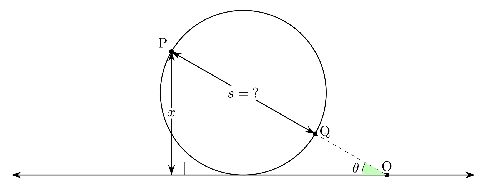
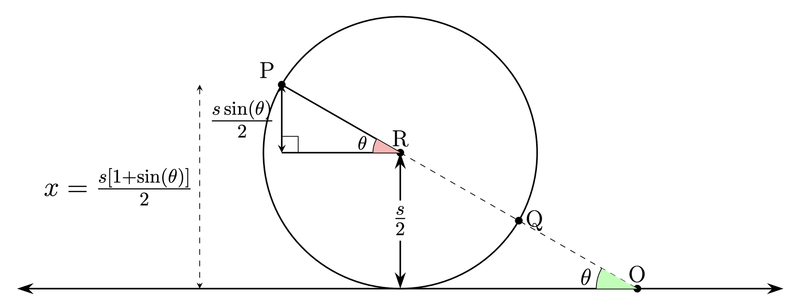
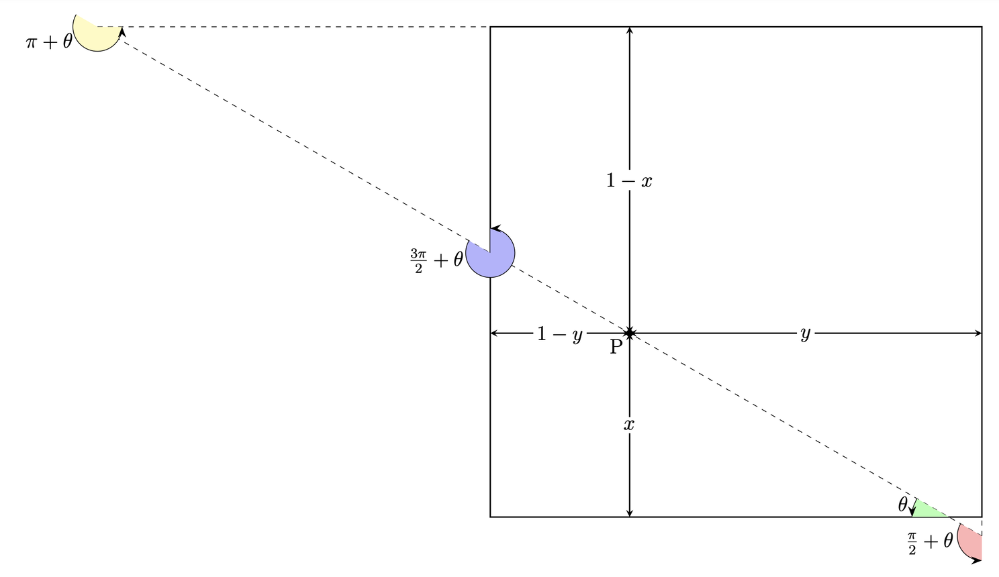

Visit this page for the official solution from Jane Street. I describe an alternative (hopefully, simpler) approach for the solution below.
Solution:
a) Simplified problem
Let us first consider a simplified problem illustrated in Figure 1 below.

Point P is located at a distance of $x$ units from a long, horizontal line. We select another point Q such that:
- An extended line passing through PQ forms an angle $\theta$ with the horizontal line.
- The horizontal line is tangential to the circle having PQ as its diameter.
What is the distance $s$ between the points P and Q?
The solution to this simplified problem is given diagrammatically in Figure 2.

Therefore:
$$s = \frac{2x}{1 + \sin(\theta)}$$It is clear that if the distance between P and Q is less than $s$, the circle would not touch the line. Conversely, if the distance is greater than $s$, part of the circle would cross the line. Therefore, $s$ is the unique value of the diameter for which the horizontal line forms a tangent.
b) Extended problem
Next, let us extend this result to a square. We can assume each of its side has 1 unit length.

Point P is located $x$ units from the bottom side and $y$ units from the left side of the square, as shown in Figure 3. Given a point P inside the square and an angle $\theta$, we aim to find a point Q such that:
- An extended line through P and Q forms an angle $\theta$ with the bottom side of the square.
- At least one of the sides is tangential to the circle drawn with PQ as its diameter, with the circle fully contained within the square.
What is the distance $s$ between P and Q?
Note that the extended problem can be broken down into four simplified problems, each of the type already solved in the first step. Figure 3 illustrates the relevant distances and angles for each side to facilitate this process. The process of deriving these values from the given input should be clear from the figure.
The solution of the extended problem is thus the minimum of the four diameters obtained from these simpler problems:
$$\min\!\left\{ \frac{2x}{1+\sin(\theta)},\; \frac{2y}{1+\cos(\theta)},\; \frac{2(1-x)}{1-\sin(\theta)},\; \frac{2(1-y)}{1-\cos(\theta)} \right\}$$If Q is such that the circle has a diameter greater than this value, part of the circle will fall outside the square. Conversely, if the diameter is smaller than this value, the circle will be fully contained within the square.
c) Solution to the original problem
Recall that we are selecting the two points (P and Q) uniformly randomly. Let us choose P in Cartesian coordinates and Q in polar coordinates. The radial coordinate of Q will be its distance from P, and the angular coordinate is the angle that the extended line through P and Q forms with the bottom side of the square. Thus the solution to the problem can be given as:
$$1 - \int_0^1 \int_0^1 \int_0^{2\pi} \int_0^{\min\!\left\{\frac{2x}{1+\sin\theta},\, \frac{2y}{1+\cos\theta},\, \frac{2(1-x)}{1-\sin\theta},\, \frac{2(1-y)}{1-\cos\theta}\right\}} s \, ds \, d\theta \, dx \, dy$$But because of the symmetry in this problem, each side of the square is critical in determining the diameter a quarter of the time. And restricting the problem to the cases where the bottom side of the square is critical, we can derive the following conditions on $x$ and $y$:
$$y \geq \frac{x(1+\cos(\theta))}{1+\sin(\theta)}$$ $$y \leq 1 - \frac{x(1-\cos(\theta))}{1+\sin(\theta)}$$ $$x \leq \frac{1+\sin(\theta)}{2}$$Thus, the solution can be rewritten as:
$$1 - 4 \times \int_0^{2\pi} \int_0^{\frac{1+\sin(\theta)}{2}} \int_{\frac{x(1+\cos(\theta))}{1+\sin(\theta)}}^{1-\frac{x(1-\cos(\theta))}{1+\sin(\theta)}} \int_0^{\frac{2x}{1+\sin(\theta)}} s \, ds \, dy \, dx \, d\theta$$Transforming the variable $x$ into $z = 2x/(1+\sin(\theta))$, we have:
$$1 - 4 \times \int_0^{2\pi} \int_0^1 \int_{\frac{z(1+\cos(\theta))}{2}}^{1-\frac{z(1-\cos(\theta))}{2}} \int_0^z \frac{1+\sin(\theta)}{2} \, s \, ds \, dy \, dz \, d\theta$$We can now easily find that the solution is:
$$1 - \frac{\pi}{6}$$